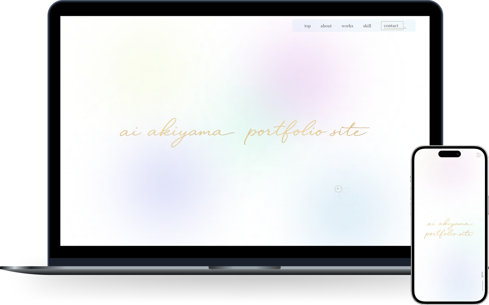

制作物

ポートフォリオサイト
design / coding
- URL
- https://qiu7917.github.io/akym-portfolio/
- 概要
-
案件応募にあたり、制作物やプロフィールをまとめたポートフォリオサイトを制作しました。
クライアントが作品や人物像へ興味を持っていただけるよう、情報の整理とわかりやすくシンプルな導線設計を心がけました。
全体のトーン＆マナーをシンプルにし、繊細なグラフィックやタイポグラフィによって「自分らしさ」を表現し他デザインにしました。 - 目的
- 制作物や自分自身のプロフィールや強みを伝えクライアント様や制作会社様に興味をもっていただく。
- ターゲット
- Web制作を依頼したい中小企業の経営者や店舗オーナー、またはコーディングやデザインの外部パートナー（リソース）を探しているWeb制作会社・ディレクター
- 情報設計
-
「シンプルで洗練されたシングルページ構成です。ファーストビュー直後に、「制作物（Works）」を配置し、視覚的な実績を提示しました。
続いて「私について（About）」で独自の強みと人柄を伝え、「スキル（Skill）」で技術的な裏付けを解説。最後にスムーズな動線で「お問い合わせ（Contact）」へ繋げています。 - デザイン
-
「信頼感、丁寧さ、大人の洗練美」をテーマに、余白を贅沢に活かしたミニマルかつ上品なデザインにしました。
背景には主張しすぎない柔らかなニュアンスカラーを敷き、セクションを跨ぐように配置された有機的なゴールドの幾何学ラインが、サイト全体に美しい一体感としなやかな動的な流れを生み出しています。 - 配色
- リラックス感と高い信頼性を与える柔らかな「ライトベージュ」と「ホワイト」をベースに構築。見出しや繊細なグラフィックラインには、上品な華やかさと洗練さを演出する「シャンパンゴールド」を採用し、全体として優しくも凛とした、信頼感の持てる上質なカラーパレットに仕上げています。